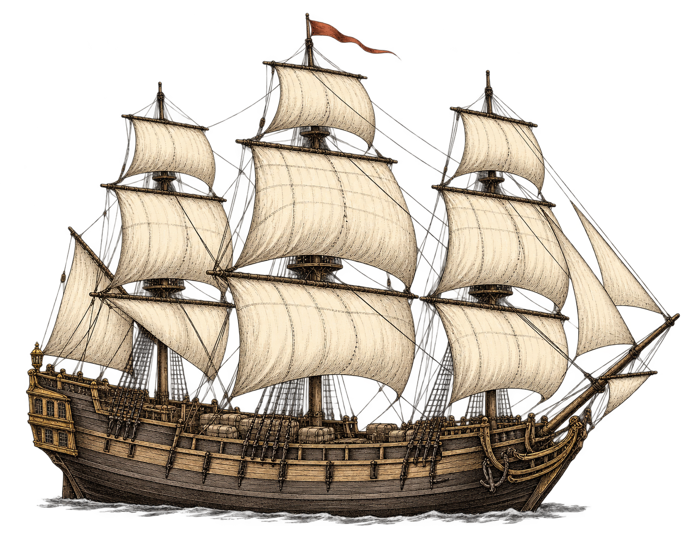
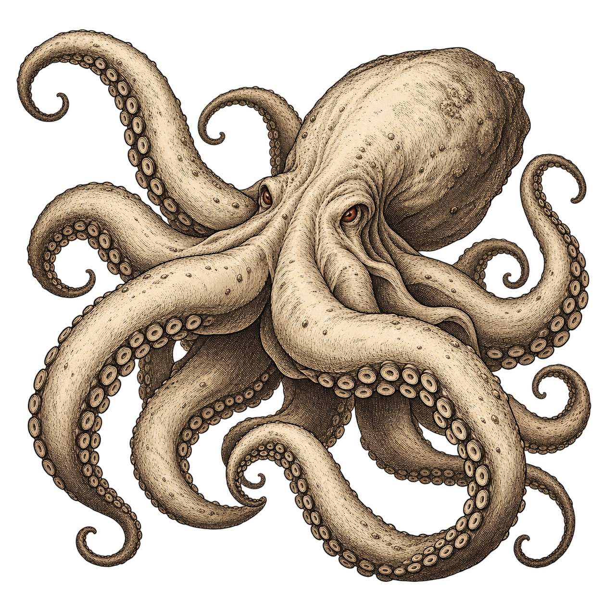
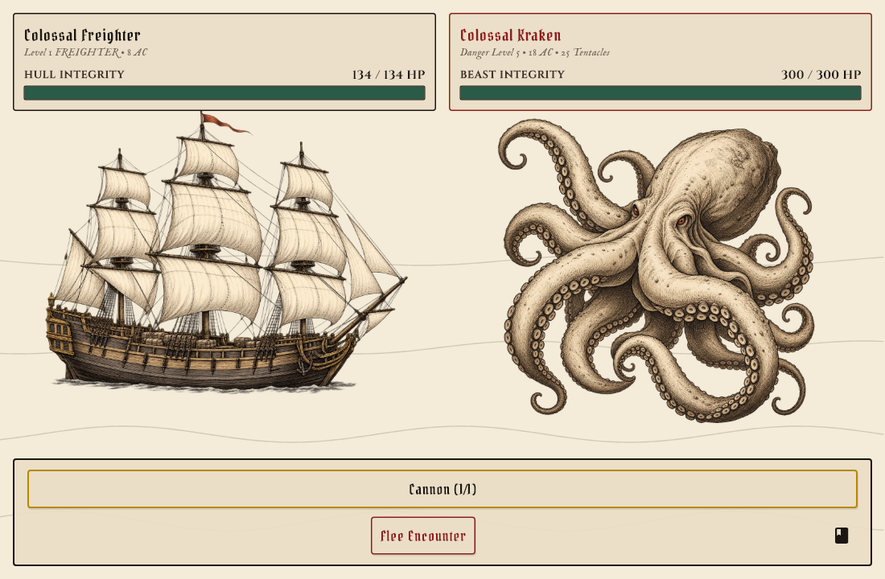
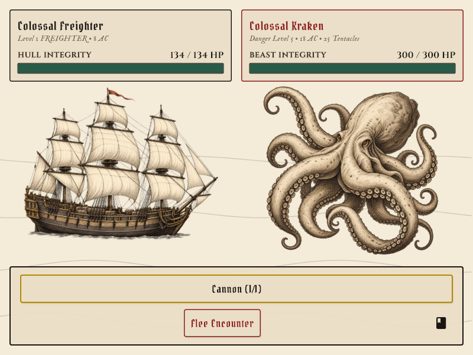

Two transparent engravings with curved hatching, natural forms, cream interiors and restrained iron-gall ink. The Kraken uses the freighter as its style reference. The parchment comes from the interface.




The illustrations bob and roll with the existing scene. The Kraken's tentacle count, ink cloud and severing notifications remain live; this pilot uses a fixed creature illustration rather than removing individual painted arms.
Generated with the built-in ImageGen tool. Exact prompts and saved asset paths · Earlier SVG proofs